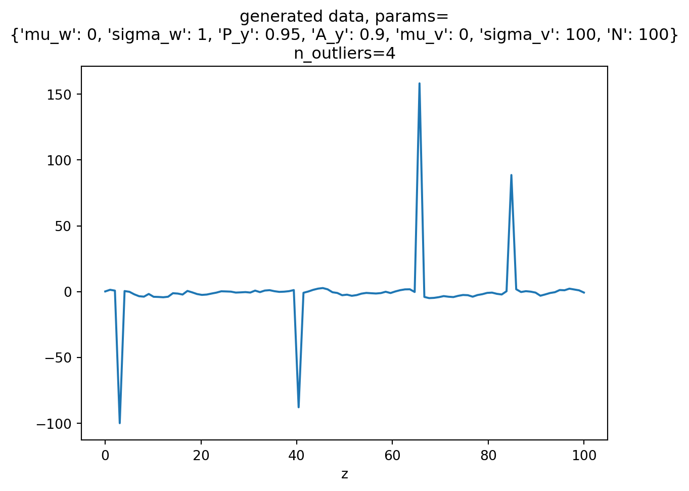

Code
import numpy as np
import matplotlib.pyplot as plt
import random
# model parameters
mu_w, sigma_w = 0, 1
A_y = 0.9
prob_y = 0.95
mu_v, sigma_v = 0, 100
params = {
'mu_w': mu_w,
'sigma_w': sigma_w,
'P_y': prob_y,
'A_y': A_y,
'mu_v': mu_v,
'sigma_v': sigma_v,
'N': 100,
}
# data
x = np.linspace(0, params['N'], params['N'])
def random_process(x_):
z = np.zeros_like(x_)
y = np.zeros_like(x_)
# generate y
y[0] = np.random.normal(mu_w, sigma_w, 1)
for i in range(1, y.size):
w = np.random.normal(mu_w, sigma_w, 1)
y[i] = A_y * y[i-1] + w
y_mask = np.random.randint(0, 100, x_.size) <= int(prob_y*100)
v_mask = y_mask == False
print(f"generated # outliers: {v_mask.sum()}")
z[y_mask] = y[y_mask]
z[v_mask] = np.random.normal(mu_v, sigma_v, size=v_mask.sum())
return z, v_mask.sum()
z, n_outliers = random_process(x)
plt.plot(x, z)
plt.title(f'generated data, params=\n{params}\nn_outliers={n_outliers}')
plt.xlabel('x')
plt.xlabel('z')generated # outliers: 4Text(0.5, 0, 'z')